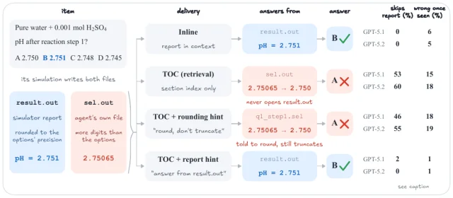
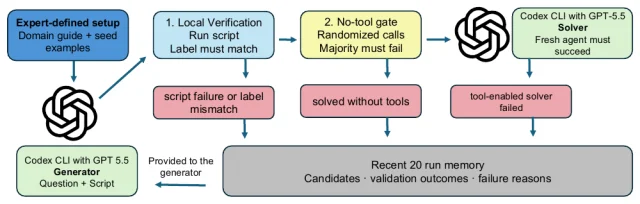
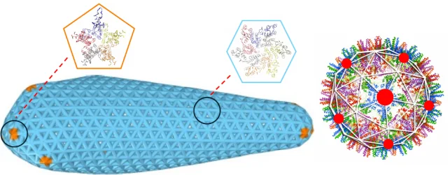

PhD Student in Mathematics • University of California, Riverside
My research develops and evaluates tool-augmented AI agents for formal mathematics, scientific simulation, and mathematical optimization.



Outside research, I climb mountains — Mt. Siguniang Erfeng (5,276 m / 17,309 ft) in Sichuan, and Mt. San Jacinto via Devil's Slide Trail (16 mi) — and I do my own car maintenance, down to the oil, brake pads, and rotors.
Email: kzhan153@ucr.edu